Maya Sharma
Co-Founder
Naperville, Illinois
We are a student-led FlyingMinds program that teaches space science and artificial intelligence through hands-on activities. We run programs at schools, libraries, and community spaces in the Naperville area, along with online programs for older students.

Our partners


We introduce students to space science and AI through activities they can build, test, and discuss. Our goal is to make these subjects approachable to students who have never tried them before.
Our team develops the curriculum and teaches the programs. Activities have included paper rockets, parachutes, and beginner AI lessons, with additional programs in coding, healthcare, and career exploration.
About AstroThinkWe offer programs for different ages, from elementary students trying engineering activities to high school students learning Python.
Students explore space science and artificial intelligence through practical activities.
High school students learn Python and the basics of neural networks.
Middle school students explore healthcare careers, the immune system, and new medical technology.
Students meet guest speakers and ask questions about their work and education.
Summer 2026 sessions have concluded. See individual programs for details and contact us about future sessions.
View all programsOur parachute lab shows how canopy size and payload mass affect a fall. Students can change one variable at a time and compare the results.
Open the parachute labCo-Founder

Co-Founder

AI Curriculum

AI Curriculum Development
“My favorite activity was the rocket”
Kaidyn, age 8
“I want to make my own robot”
Zack, age 8
Email us about student programs, school visits, or community partnerships.